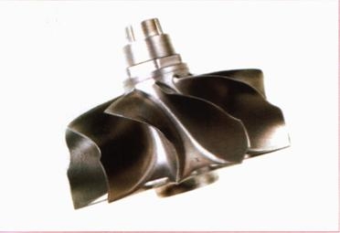
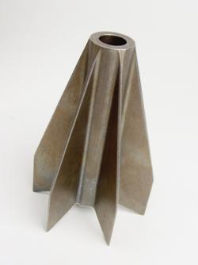
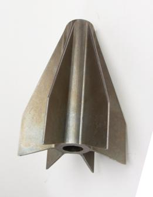

|
Karýþýmýn
kompozisyonunu deðiþtirmek!
Hammadde
içerisinde bulunan baðlayýcýlar, reçine, mum, plastik hamuru,
yüzey kayganlaþtýrýcý, çeþitli dolgu maddeleri ve ayrýþtýrma
iþlemi için gerekli diðer bazý organik malzemelerin kompleks
bir þekilde birleþtirilmesiyle oluþturulmaktadýr. Her bir
katký maddesi baðlayýcýya spesifik bir özellik kazandýrmaktadýr
ve bunlarýn bileþkesi baðlayýcýnýn toplam özelliðini teþkil
etmektedir. Baðlayýcýnýn toplam özelliði de sonuçta elde edilecek
hammaddeyi etkilemekte ve onun stabilite, çekme mukavemeti,
uzama, viskozite vs. gibi niteliklerine katkýda bulunmaktadýr.
Kolayca anlaþýlacaðý gibi, eðer elimizdeki yüksek oranda toz
içeren bir hammaddeye ait büzülme faktörünü düþürmek istersek,
baðlayýcý içerisindeki katký maddelerine ilave yaparýz. Örneðin
enjeksiyon sýcaklýðýnda hammaddenin viskozitesini düþürecek
ve yaðlama kabiliyetini arttýracak katký maddeleri parçanýn
kalýplanmasýna fayda saðlayacaktýr. Benzer biçimde enjeksiyon
iþlemi sýrasýnda viskozitesi düþük olan bir hammaddeye ait
büzülme faktörünü arttýrmak istersek, viskoziteyi yükselten
katký maddelerini karýþýma ilave ederiz. Alternatif olarak,
farklý morfolojideki dolgu maddeleri de ayný sonucu elde etmek
için kullanýlabilmektedir.
Bu
nedenle ister büzülme faktörünü düþürmek için dolgu malzemesi
katýlsýn, ister arttýrmak için baðlayýcý ilave edilsin, karýþýmýn
kompozisyonu istenilen özelliklerin kazandýrýlmasý amacýyla
deðiþtirilebilir. Ancak neticede, mevcut karýþýmýn kompozisyonu
bir kez modifiye edildi mi, o karýþým artýk yeni bir hammadde
olmuþtur ve özellikleri optimize edilmelidir.
MIM
teknolojisinde mühendisler metal tozu ve plastik baðlayýcýlarýn
karýþým formülünü keþfettiklerinde ve karýþým malzemenin kendini
çekme özelliðini yönetmeye baþladýklarýnda adeta birer büyücüye
dönüþüyorlar: Onlar artýk çok hassas toleranslara sahip MIM
parçalarý üretebilir, ayný malzemeden farklý büyüklüklerde
ya da farklý malzemelerden ayný büyüklükte ürünler elde edebilirler.
Ve bunlarýn hepsini tek bir kalýp seti ile yapabilirler. Daha
da ötesi; kalýp setleri iþleme hatalarý içerse dahi bunu baþarabilirler.

Þekil.6
- Nikel alaþýmýndan MIM yöntemiyle imal edilmiþ bir türbin
çarký
Ýþte
MIM büyücülerinin ilk sýrrý: "Kalýp iþleme hatalarý düzeltilebilir."
Bir önceki saat gövdesi örneðimize geri dönelim: 32.00 mm
olmasý istenen gövde çapý 31.918 mm gelmekte ve hammadde üreticisi
tarafýndan 1.176 olarak verilen büzülme faktörünün de gerçekte
K=1.178 olduðunu tesbit etmiþtik. Tabi bu arada kalýbýmýzý
da imal etmiþtik. Þimdi toleranslar içerisinde kalacak saat
gövdesi imal etmek için karýþýmýn büzülme faktörünü deðiþtirmemiz
gerekmektedir. Olmasý gereken faktör K=37.60/32.00 = 1.175
dir. Görüldüðü gibi daha az büzülmeye ihtiyaç olduðundan mevcut
karýþýma metal tozunun ilave edilmesi gereklidir. Ýlave edilecek
miktar karýþýmýn orijinal kompozisyonuna baðlýdýr. Bu nedenle
toz ilavesi yapýlýrken hammaddenin viskozitesini de koruyabilmek
için eþ zamanlý olarak baðlayýcý da karýþýma katýlmalýdýr.
Bu noktada ikinci sýr da ortaya çýkmaktadýr:
"Çok hassas toleranslara sahip parçalar üretilebilir."
Karýþýmýn
formülünü deðiþtirme konusunda yeterince tecrübeye sahip olan
MIM üreticileri dar toleranslara sahip parçalarý imal edebilmektedirler.
Kalýp iþleme hatalarýný bertaraf etmek için uygulanan çözüm
yöntemi, ayný þekilde hassas toleranslara ulaþmak için de
kullanýlabilmektedir. Sadece bu kez, modifiye edilecek büzülme
faktörü, sinterlenmiþ parçanýn toleranslardan sapmasýna göre
hesaplanýr.
Büyü
iþe yarýyor!
Büzülme
faktörü ile oynayabilmek, daha fazla imkanlar da saðlamaktadýr.
Üçüncü sýr: "Ayný kalýp seti ile farklý
büyüklüklerde parçalar üretilebilir." Kolayca anlaþýlacaðý
gibi büzülme faktörü ile oynayabilmek, hacimsel manada metal
tozu ve baðlayýcýlarýn pratik limitler içerisinde karýþtýrýlabileceði
koþullarda olabilir. Kabaca hacimsel olarak oran %35-%70 arasýndadýr
ve bu da büzülme faktörünün 1.41 - 1.126 arasýnda olabileceði
anlamýna gelmektedir. Böylesine deðiþebilen bir kendini çekme
oranýyla da oldukça farklý ölçüler elde etmek mümkündür.
Çelik
saat gövdesi örneðimizi tekrar ele alalým. Kalýp hatasýný
kompanze ettiðimizi ve 32mm çapýnda paslanmaz saat gövdeleri
imal ettiðimizi varsayalým. Bununla beraber yine paslanmaz
çelikten ama bu kez 28 mm çapa sahip bayan modeli için de
gövde yapmak isteyelim. Bu halde büzülme faktörü K=37.60/28.00
= 1.342 olmalýdýr. Yani faktörü büyütmek için karýþýma baðlayýcý
ilave etmek gerekmektedir. Bu örnek ayný kalýpla nasýl daha
küçük bir parça yapýlabileceðini göstermektedir. Daha büyük
bir parça yapmak da benzer biçimde büzülme faktörünü küçültmek
ile mümkün olacaktýr.
|

|

|
Þekil.7
- MIM yöntemi ile sadece mini parçalar üretilmemektedir.
Yukarýdaki roket kanatçýðý yarým kilodan fazla gelmektedir.
|
Sýra
dördüncü sýrda: "Farklý malzemelerin büzülme faktörlerini
eþitlemek."
MIM hammaddesinin kendini çekme faktörünü yönetmeye baþladýðýnýzda
farklý malzemelere ait büzülme deðerlerini eþitlemek suretiyle
ayný ölçülere sahip ancak farklý malzemelerden yapýlmýþ MIM
parçlar elde edebilirsiniz. Paslanmaz çelik saat gövdesi imal
etmek için dizayn edilmiþ bir kalýpla, ayný boyutta titanyum,
tungsten karbür, zirkonyum gibi farklý malzemelerden saat
gövdeleri de üretilebilmektedir.
Beþinci
sýr; "maliyet avantajýnýn yakalanmasýdýr."
MIM teknolojisinin sunmuþ olduðu yukarýda açýklanan imkanlar,
bir çok tüketim malýnýn imalatýnda kullanýlacak kalýp yatýrýmlarýnýn
da azaltýlmasýna olanak saðlamaktadýr. Hele günümüzde tüketim
mallarýnýn çok çeþitli ve ekonomik ömürlerinin kýsa olduðu
düþünülürse saðlanan tasarrufun büyüklüðü daha da iyi kavranabilecektir.
Diðer tarafan bilhassa kompleks þekilli parçalarda kalýbý
ürüne uydurmak yerine, ürünü kalýba uydurma felsefesi kalýp
imalatýndaki yeniden iþleme maliyetlerini büyük oranda düþürmektedir.
Diðer bir maliyet avantajý da kalýp ömrünün arttýrýlmasý þeklinde
ortaya çýkmaktadýr. Aþýnma nedeniyle kalýp ölçüleri büyüdüðünde
büzülme faktöründe yapýlacak deðiþiklikle baþlangýçtaki ölçüler
yeniden elde edileceðinden kalýbýn daha uzun süre hizmet vermesi
mümkün olmaktadýr.
Hammaddenin
büzülme faktörünü kontrol edebilmek MIM mühendislerine altýncý
bir imkan daha tanýmaktadýr: "Metal veya seramik parçalarýn
minyatürize hale getirilmesi."
MIM
prosesindeki yüksek oranlý kendini çekme özelliði, diðer konvensiyonel
imalat yöntemleriyle üretilmesi pek de mümkün olamayan görece
küçük boyutlu minyatürize parçalarýn imal edilebilmesini saðlar.
Sinterleme öncesi parça ölçüleri (yeþil parça ölçüleri) nihai
parça boyutlarýndan daha büyük olduðundan, imalat kolaylýkla
yapýlabilir ve parça sinterleme sonrasý kendini çekerek minyatürize
hale gelir. Bu özellik MIM mühendislerine imalatta sanki bir
editör programý kullanma avantajý sunmaktadýr.
Sonuç
Görece
küçük (minyatürize), karmaþýk þekilli (kompleks), dar imalat
toleranslarýna sahip (hassas) parçalarýn, yüksek mekanik özelliklere
sahip metal malzemelerden kaliteli bir biçimde ve büyük miktarlarda
üretilmesi, henüz emekleme safhasýnda bulunan ancak geleceðin
imalat teknolojisi olarak gösterilen Metal Enjeksiyon Kalýplama
- MIM yöntemi ile yapýlmaktadýr. Dizayn mühendislerine klasik
imalat metodlarýnýn ötesinde imkanlar sunan MIM, tasarým ve
üretimde sýnýrlarýn zorlanmasýna neden olmaktadýr.
Not:
Daha fazla bilgi için yazarýn ayný konudaki diðer makalesine
baþvurulabilir:
Geleceðin teknolojisi; Metalin
plastik gibi þekillendirilmesi
|